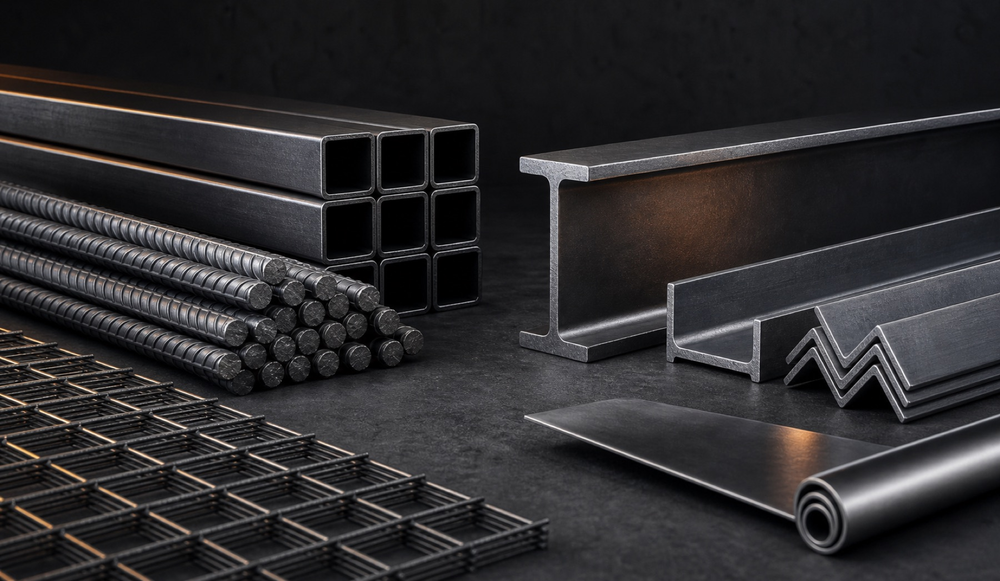

Как мы работаем
Одна заявка, один менеджер и прозрачный статус от расчета до приемки.
STEELFORM SUPPLY — поставщик металлопроката и строительных материалов для строительных компаний, производств, подрядчиков и девелоперов.

Мы помогаем быстро комплектовать объекты, рассчитывать заявки и организовывать поставки по России. Команда объединяет закупку, техническую проверку и логистику в одном процессе.
Каждая заявка проверяется по марке, стандарту, размерам и единицам измерения. До отгрузки клиент получает согласованное предложение, сроки и перечень документов.
Познакомиться с подходомОдна заявка, один менеджер и прозрачный статус от расчета до приемки.
Девелоперам, подрядчикам, производствам, заводам и закупочным организациям.
Проверяем поставщика, маркировку, документы и соответствие спецификации.
Договор, счет, УПД, транспортные документы и сертификаты качества.
Работаем с проверенными производителями и региональными складами.
Фиксируем условия и сопровождаем поставку до подтвержденной приемки.